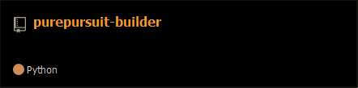
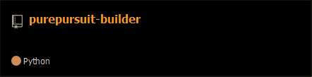

Hello,
I'm a junior at TJHSST interested in CS, SWE, competitive programming, and robotics. At TJ I'm the lead programmer of
FTC team 14607.
In the little free time I have, I like to read manga and brush up on my Japanese.
Here are some projects I am currently working on.
 
I'll be blogging about any topic that's been interesting me, such as control theory, path following algorithms,
openCV, etc.
# Posts

I'll be blogging about any topic that's been interesting me, such as control theory, path following algorithms,
openCV, etc.
# Posts